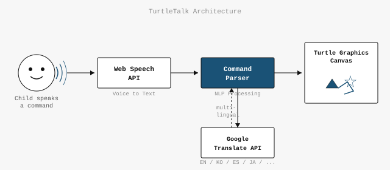
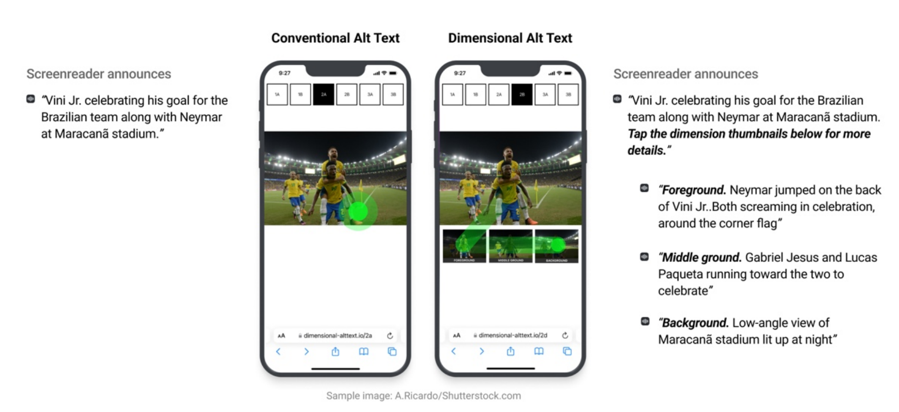
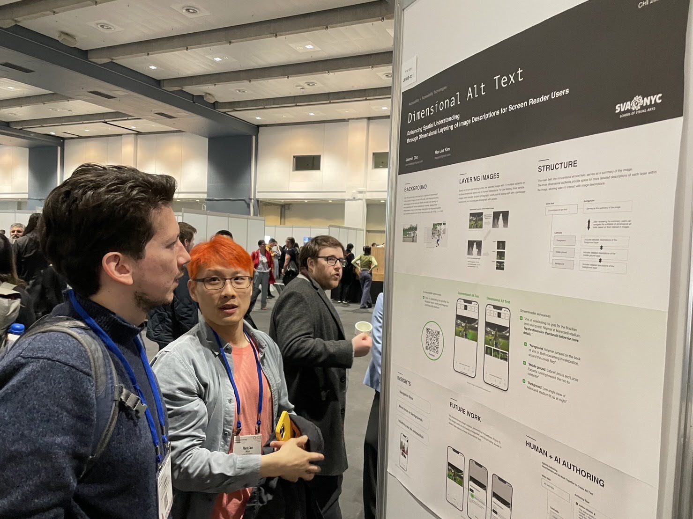

HCI Research: Voice UI & Accessibility
Full-stack prototype published at ACM CHI 2019 — teaching children programming through voice commands and visual turtle graphics.
Problem
Young children who haven't yet learned to type still benefit from early exposure to computational thinking — sequencing, repetition, and cause-and-effect in code. Existing tools (Scratch, Code.org) require reading, clicking, or dragging blocks, creating barriers for pre-literate or early-literate children.
Solution

A browser-based prototype combining three web APIs into a seamless voice-to-code loop:
- Web Speech API for real-time voice command recognition — the child speaks naturally, and the system interprets directional and control commands.
- Google Translate API for multilingual support — allowing children to speak commands in their native language (Korean, English, etc.) with automatic translation.
- Canvas-based turtle graphics for immediate visual feedback — the turtle moves, draws, and turns on screen as commands are spoken.
The entire prototype runs in the browser with no installation required.
My Role
- Designed the interaction model: voice → parsed command → visual execution
- Built the full-stack prototype (frontend + voice processing pipeline)
- Implemented the multilingual command mapping via translation API
- Designed the visual turtle graphics rendering and animation
- Participated in user study design and prototype iteration
Impact
- Published at ACM CHI 2019 (Glasgow, UK) — the top venue in Human-Computer Interaction
- Demonstrated that voice-based programming interfaces are viable for pre-literate children
- Prototype validated through user studies with children
Links

Prototype of Dimensional alt text for comparison with conventional alt text
Enhancing spatial understanding for screen reader users — a layered alt text system published at ACM CHI 2023.
Problem
Traditional alt text provides a single flat description of an image, which fails to convey spatial relationships, object positions, and the dimensional structure that sighted users perceive at a glance. Screen reader users miss critical context about where things are in an image.
Contribution
Co-authored a study proposing layered image descriptions that separate overall scene context from spatial details and individual object descriptions. This dimensional approach gives screen reader users the ability to navigate image content at different levels of detail.
Impact
- Published at ACM CHI 2023 (Hamburg, Germany)
- Advances accessibility research for non-visual image understanding
- Applicable to web accessibility standards and assistive technology design
